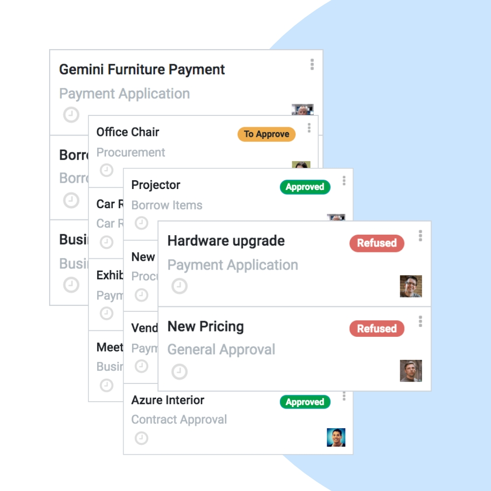
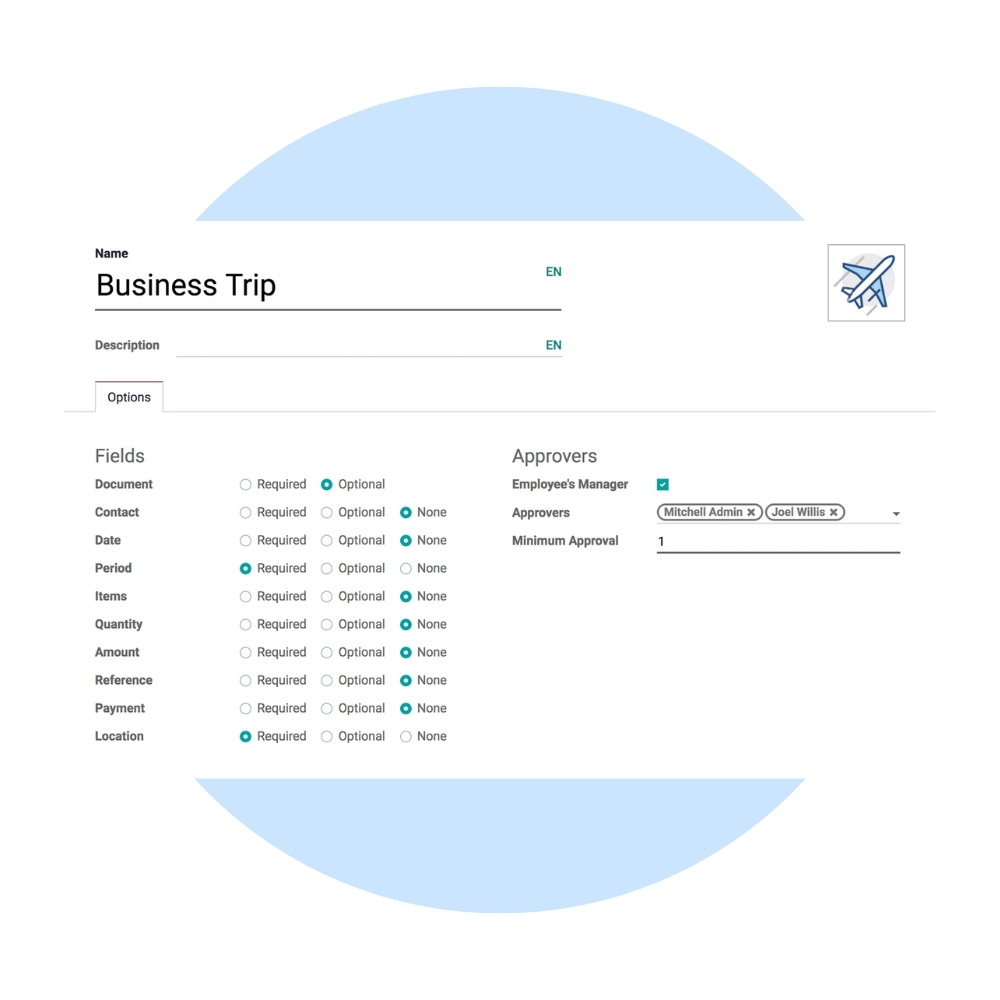
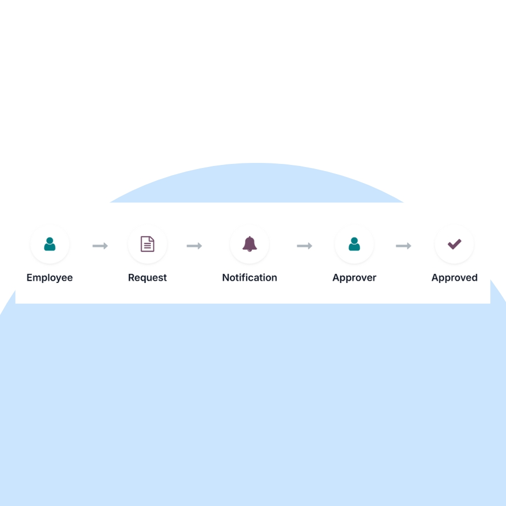

Simplify internal approvals with Odoo Approvals. We help businesses manage purchase requests, expense approvals, budgets, and internal decisions using configurable, rule-based approval workflows.
We configure Odoo Approvals to match your internal policies, approval hierarchies, and financial controls. Integrate approvals seamlessly with Purchase, Expenses, Inventory, Accounting, and HR.


Our implementation ensures transparent decision-making, faster approvals, and full auditability across all approval-driven processes.
Create approval requests for any use case.
Route requests through multiple approvers.
Enforce budgets and internal rules.
Track every decision with full history.
Approvers are notified instantly.
Connected with Purchase, Expenses & Accounting.
We help you continuously improve approval efficiency, reduce delays, and strengthen governance with analytics and automation.
